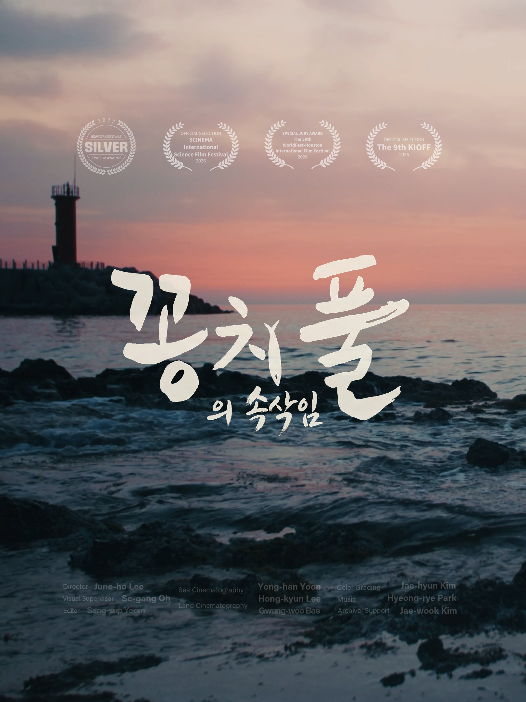
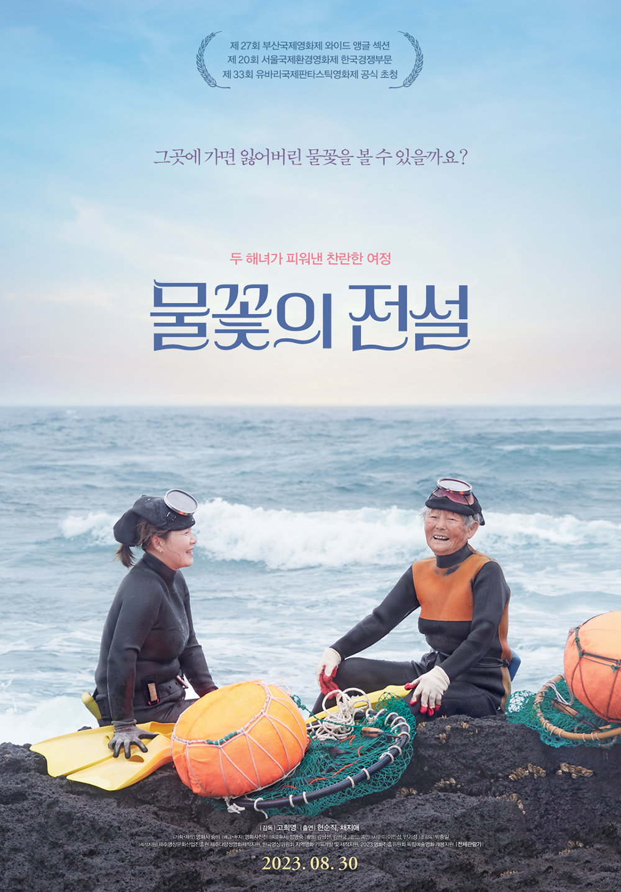
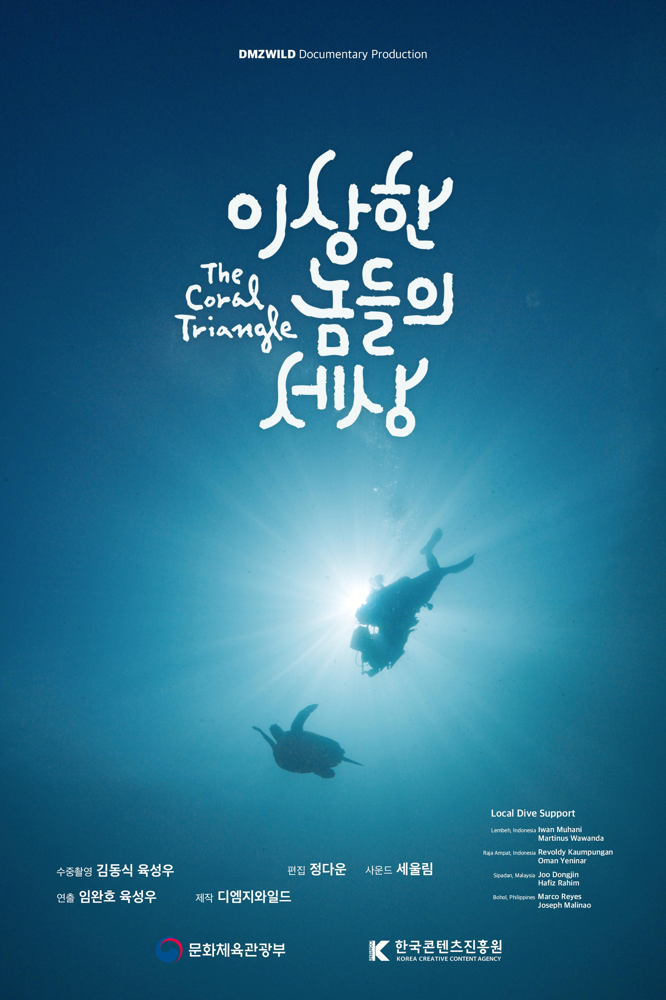

개막작

수라
Sura: A Love Song
감독 황윤 · 새만금 갯벌 7년의 기록
8/8 토
15:30 상영 · 17:25 GV
연동 롯데시네마 · 모더레이터 전성실
'갯것'은 갯가에서 살아가는 모든 것 — 보말과 깅이, 해녀와 갯바위, 조수웅덩이의 작은 생명들을 가리키는 제주의 옛말입니다. 제3회 갯것이 영화제 × 생태관광 주간은 8일간 제주 곳곳을 무대로, 영화관과 갯벌을 잇는 한 호흡의 행사입니다.
올해 행사는 생태관광 주간을 중심에 두고, 영화제는 그 흐름 안의 한 장으로 들어옵니다. 깅이와 바당의 임형묵 감독이 안내하는 갯벌 생물 탐험, 87년 경력의 하도 해녀와 함께하는 물질, 다시바다의 패들보드 위에서 만나는 남방큰돌고래까지 — 6개의 생태 프로그램이 8일을 가로지릅니다.
새만금에서 카메라를 내려놓지 않은 황윤 감독의 『수라』가 첫 파도를 일으키고, 30년 경력 김동식 수중촬영감독이 코랄 트라이앵글에서 만난 『이상한 놈들의 세상』이 마지막 물결을 만듭니다. 그 사이로 『꽁치풀의 속삭임』, 『물꽃의 전설』, 『조수웅덩이』, 『101』이 각자의 바다를 들려줍니다.
"갯것이는 순 제주어로 바다에서 살아가는 생물들을 통칭하는 말입니다. 바다에서 살아가는 사람도 갯것에 포함됩니다." — 임형묵 집행위원장 (생태관광지원센터장 · 『조수웅덩이』 감독)
본 행사는 만 65세 이상 시니어 관객과 가족 단위 방문객의 접근성을 우선으로 설계되었습니다. 큰 글자, 평이한 동선, 영화와 직접 이어지는 갯벌 체험 — 영화관에서 바다까지 한 호흡으로 이어집니다.
제주의 갯벌에서 일하는 분들이 직접 안내하는 6개 프로그램. 해양생태 해설부터 스쿠버, 해녀체험, 패들보드, 투명 카약까지. 8일 동안 매일 다른 바당이 열립니다.
새만금에서 제주 삼달리까지, 강원도 해안선에서 인도네시아 코랄 트라이앵글까지. 다큐멘터리 6편이 우리 바다와 갯벌의 지금을 기록합니다.





30년 경력의 김동식 수중촬영감독이 8K 카메라를 들고 '바다의 아마존' 코랄 트라이앵글로 향한다. 기상천외한 해양 생물들의 치열한 생존기와 경이로운 위장술, 그리고 기후 위기에 직면한 바다의 현실을 담은 고품격 해양 다큐멘터리.
지구상에서 해양 생물 다양성이 가장 높은 '바다의 아마존' 코랄 트라이앵글. 30년 경력의 김동식 수중촬영감독이 20년 만에 8K 카메라를 들고 다시 이곳을 찾았다. 햇빛조차 닿지 않는 렘베 해협의 검은 모래밭에는 40가지 모습으로 변신하는 흉내문어, 낚싯대를 뻗는 씬벵이, 맹독을 품은 파란고리문어 등 기상천외한 위장술과 유혹의 기술로 살아남은 '이상한 놈들'이 살고 있다. 아름다운 산호 정원부터 맹그로브 숲까지 생명의 축복이 가득한 곳이지만, 최근 해수 온도 상승으로 인한 산호 백화현상과 밀려드는 해양 쓰레기로 인해 생태계가 붕괴할 위기에 처해 있다.
개막작 『수라』가 첫 파도를 일으키고, 폐막작 『이상한 놈들의 세상』이 마지막 물결을 만듭니다. 그 사이 8일간 생태 프로그램과 영화 상영이 함께 진행됩니다.
※ 상기 일정은 변경될 수 있습니다.
※ GV (Guest Visit): 감독 및 관계자와의 대화. 모더레이터 전성실.
※ 생태관광 프로그램 운영 장소는 각 프로그램 담당자에게 문의해 주세요.
※ 8월 8일 개막공연: 구좌 어린이 합창단.
메인 상영관은 연동 롯데시네마. 생태 프로그램은 성산·보목·이호·하도·삼양·예래(하예)에서 운영됩니다.
영화 상영관과 생태 프로그램 운영지가 다소 떨어져 있습니다. 권역별 일정·차량 동선을 미리 확인해 주세요.